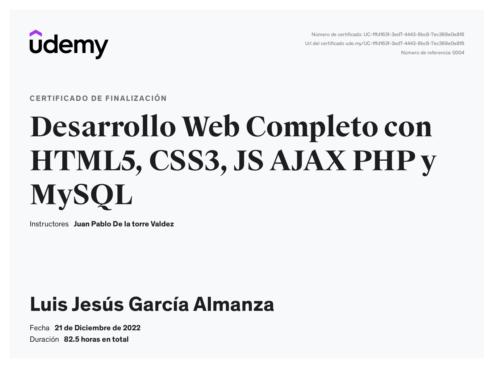

Experiencia Laboral
Programador Jr
Programador Backend Jr
He trabajado en el desarrollo de aplicaciones web utilizando tecnologías de Java, enfocándome en implementar soluciones backend eficientes y bien organizadas.
Durante mi experiencia, adquirí conocimientos en la creación de microservicios, configuración básica de API Gateways y manejo de bases de datos relacionales. También he apoyado en el diseño y desarrollo de interfaces web modernas utilizando Angular.
Destaco por mi entusiasmo para aprender nuevas tecnologías, mi capacidad de trabajo en equipo y mi motivación para afrontar retos tecnológicos que impulsen el éxito de los proyectos.
Tester
Durante mi periodo en el servicio social en la facultad tuve que desarrollar un trabajo de tester en la pagina web de la facultad, donde revisamos los estados responsive de la misma y verificaciones de diferentes funciones.
Este trabajo me ayudo a desarrollarme en un area diferente y adquirir conocimientos nuevos que iran de la mano con mi area de trabajo principal de programador.
Cursos y diplomados
Desarrollo Web
